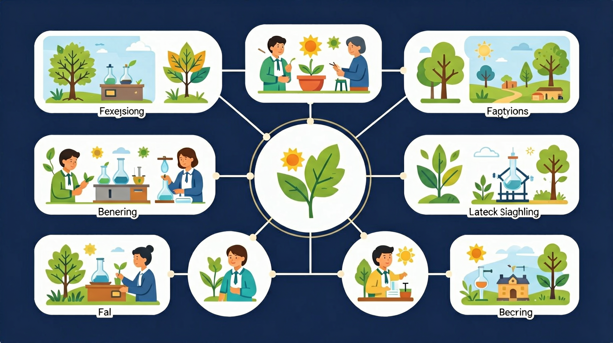

🎯 能说出五种感官及其对应的感受器
🎯 能判断不同情境中起主导作用的感官
🎯 能分析感官缺陷对生活的影响
从日常生活出发，感受感官的神奇力量
你每天都在使用身体的感官：你能看到五彩缤纷的世界，听到美妙的音乐，闻到香喷喷的饭菜，尝到各种食物的味道，感受到风的轻抚……这些都是你与生俱来的能力，你已经习以为常。
但是，你有没有想过：为什么你能看到颜色，而很多动物看到的却是黑白世界？为什么感冒鼻塞的时候，食物好像也变得没有味道了？为什么在漆黑的房间里，你能通过声音判断方向，却看不清物体的形状？感官真的可靠吗？我们的眼睛会被"骗"吗？
因此，今天我们将深入探索人体的五种感官：视觉、听觉、嗅觉、味觉和触觉。了解每种感官对应的器官是什么，它们是如何工作的，有什么局限性，以及我们应该如何保护它们。用科学的眼光认识自己的身体！
❓ 为什么辣味其实是痛觉而不是味觉？
❓ 盲人摸象的故事里为什么每个人的描述都不一样？
❓ 看电影时为什么爆米花吃起来更香？
学完这一课，这些问题你都能自信地回答。
下列哪个不属于基本味觉？
黑暗中吃饭觉得不香，主要因为缺少哪种感官？
眼耳鼻舌皮肤——五种神奇感官，帮助我们感知和探索这个美丽的世界
↓ 开始探索
每种感官都有专属器官，承担独特的信息感知功能
能看到颜色、形状和远近。约80%的外界信息来自视觉，是最重要的感官。
能听到各种声音，辨别方向和远近。帮助我们交流和感知环境变化。
能闻到数千种不同的气味，帮助我们感知食物和环境。与味觉紧密相连。
能尝出甜、酸、苦、咸、鲜五种基本味道。舌头上有约10,000个味蕾。
最大的感觉器官。感受冷热、压力、疼痛和质感。手指尖触觉最灵敏。
通过动画深入理解五种感官的器官与功能